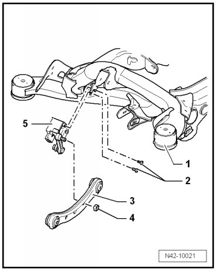

Rear Suspension
Level Control System Sensor
Special tools, testers and auxiliary items required
• Torque wrench (VAG 1331)
• Vehicle diagnostic, test and information system (VAS 5051)
Assembly Overview

1. Subframe
2. Bolt, 5 Nm
3. Top front transverse link
4. Self locking nut (8 Nm)
5. Rear level control system sensors (G76/G77)
Removing
CAUTION!
Before starting work, stabilizer bars must be coupled in vehicles with separable stabilizer bars. Otherwise, there is the danger of injury caused by unintentional separation.
- Raise vehicle.
- Disconnect electrical connection on rear level control system sensors (G76/G77).
- Remove bolts - 2 - and nut - 4 - and remove rear level control system sensors (G76/G77).
Installing
- Attach rear level control system sensors (G76/G77) to subframe using bolts - 2 -.
- Install ball joint pin to top front transverse control arm using new nut - 4 -.
Joint between lever of rear level control system sensors (G76/G77) and coupling rod must point downward while doing so.
- Tighten all bolts to tightening specification.
- Lower vehicle on wheels.
- Perform basic setting for rear level control system sensors (G76/G77) using vehicle diagnosis, testing and information system (VAS 5051).